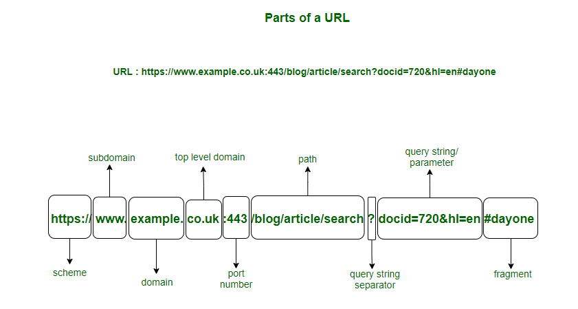
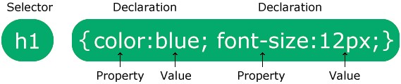
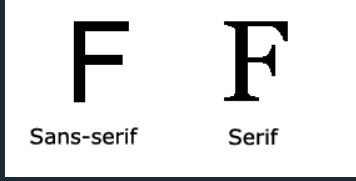

Reading Assignment 1
Word Wide Web General
1.What are the most essential technologies that made the World Wide Web such a success?
URLs, http und https
2.How are resources (html pages, images, etc) addressed in the web?
Durch URLs.
3.What are the general components of a url?

Web Server
1.What is a web server?
Ein Web Sever verbindet sich mit dem Internet und ist für die Web Anfragen eines Web Clients zuständig.
2.What does a web server?
Ein Web Sever behandelt die Anfragen und versorgt den Web Client mit den angefordeten Inforamtionen z.B. Webpage.
3.How can content be stored on a web server?
Statische Seiten werden im Filesystem gespeichert und dynamische Seiten werden für Anfragen zugeschnitten und generiert.
4.How is content in webpages described?
Der Inhalt einer Seite kann durch Text, Audios und Videos dagestellt werden.
Web Client
1.What is a web client?
Ein Web Client ist eine Applikation oder Gerät das mit Web Sever kommuniziert.
2.What does a web client?
Ein Web Client sendet Requests an den Web Sever und interpretiert die zurück erhaltenen Antworten.
3.Web Client and Web Browser is the same
Ein Web Browser ist eine Art von Web Client (jedes Gerät das einen Web Zugang hat).
Hello World
1.What is the html head element?
Der head enthält alle wichtigen meta Inforamtionen (z.b Zeichen kodierung auf UTF-8).
2.What does !DOCTYPE html mean?
!DOCTYPE html sagt dem Browser, dass es eine HTML Seite ist.
3.What are the two top most elements within the html element?
Die two top most elements sind head und body.
4.How to emphasize a text and how is it displayed in the browser?
Mit dem em tag.
5.How to mark up important ext and how is it displayed in the browser?
Mit dem strong tag.
Reading Assignment 2
Html
1. Name the components of html elements properly
1. !DOCTYPE 2. html 3. head 4. body: h2-h6(Überschrieft), p(paragraph), a(link), img(bild)
2. Identify void elements and how they are denoted
Elmente haben für gwöhnlich einen tag und einen endtag aber void elemente haben keinen endtag.
3. Write down the correct DOCTYPE declaration for html 5
<!DOCTYPE html>
4. Write down syntactically correct statements for the following elements
- Article(article):
- Gibt unabhängig, in sich geschlossene Inhalte wieder
- Body(body):
- Sozusagen der Hauptteil der Webiste.
- line break(br):
- Macht einen Zeilenumbruch.
- Headings(h2-h6):
- Gibt 6 davon h2-h6 und sind die Überschrieften der Webiste werden auch vom Broweser verwendet und bestimmte Inhalte zu finden.
- Section with meta inforamtionen (head)
- Dort stehen die meta daten wie z.B. Zeichen encodierung oder auch der Titel.
- Top level element (html):
- Sagt aus das diese Website eine HTML Seite ist.
- Image <img scr="img src."Team.jpg" alt=">:
- Wird verwendet um Bilder anzuzeigen src. ist dabei das Attribut mit der URL.
- paragraph (p):
- Ist der normale Text einer Webiste (so wie man ihn gerade liest).
- Section (section):
- Definiert einen bestimmten Abschnitt des Dokuments.
- Label appearing in the titel bar (titel):
- Der Titel des Dokuments, wird auch im der Suchleiste des Browsers angegeben.
- Link to other pages <a href="">
- Ein Link zu einer anderen Website.
- Comment:
- So kann man einen Kommentar schreiben dieser wird zwar im Code angezeigt aber auf der Webiste selbst nicht.
- Head with titel and meta elements:
- Der Head wo die wichtigsten Informationen zu der Webiste stehen.
CSS
1. Name the components of a css rule properly
Eine Css-Regel besteht aus einem Sektor und einem Deklarationsblock

2. Use combinators properly: direct child, descendant, adjacent sibling, sibling
- Nachkommen-Selektor (space): Der Nachkommenselektor stimmt mit allen Elementen überein, die Nachkommen eines angegebenen Elements sind.
Das folgende Beispiel wählt alle <p> Elemente innerhalb von <div>-Elementen aus: div p {
- Untergeordnete Auswahl (>): Der untergeordnete Selektor wählt alle Elemente aus, die untergeordnete Elemente eines angegebenen Elements sind.
Das folgende Beispiel wählt alle <p> Elemente aus, die Kinder eines <div> Elements sind: div > p{
- Auswahl benachbarter Geschwister (+): Der nebengeordnete Selektor wird verwendet, um ein Element auszuwählen, das direkt nach einem anderen bestimmten Element liegt.
Geschwisterelemente müssen das gleiche Elternelement haben, und „benachbart“ bedeutet „unmittelbar folgend“.
Das folgende Beispiel wählt das erste <p> Element aus, das unmittelbar nach <div> Elementen platziert wird: div + p {
- Allgemeine Geschwisterauswahl (~): Der allgemeine Geschwisterselektor wählt alle Elemente aus, die nächste Geschwister eines angegebenen Elements sind.
Das folgende Beispiel wählt alle <p> Elemente aus, die nächste Geschwister von <div> Elementen sind div ~ p {
3. Specify colors by color names and in hexadecimal notation
Rot in der normalen Schreibweise red in der hexadecimal Schreibweise ff0000
4. Declarations for color, background color
Farbe mit Element{color:} und den Hintergund mit Element{background-color}
5. pseudo classes for the < a> element
Gestalten Sie ein Element, wenn ein Benutzer mit der Maus darüber fährt
Gestalten Sie besuchte und nicht besuchte Links unterschiedlich
Gestalten Sie ein Element, wenn es den Fokus erhält
Beispiele: a:link {color: red;}, /* visited link */ a:visited {color: green;}, /* mouse over link */ a:hover {color: hotpink;}, /* selected link */a:active {color: blue;}
6. Declaration for background image
body{background-image: url"(path)";}
7. Declaration for text alignment (left, right, center, justify)
body{text-align: center, left,...;}
8. Declaration for text decoration (overline, underline, line-through)
Elemen {text-decoration-line: overline, underline,...;}
9. Declaration for text transformation (uppercase, lowercase, capitalize)
Element {text-transforam:uppercase, lowercase;}
10. Identify the difference between serif and sans-serif fonts
Serifenschriften: haben einen kleinen Strich an den Rändern jedes Buchstabens. Sie schaffen ein Gefühl von Formalität und Eleganz.
Sans-Serif- Schriftarten: haben klare Linien (keine kleinen Striche angebracht). Sie schaffen einen modernen und minimalistischen Look.

11. Declarations for font families
- Element{font-family: Schrieftart und die font-family}
12. Declarations for font style normal and italic
- Element{font-style: normal;}
13. Declarations for font sizes
- Element{font-size = 2.5em.
14. Declarations for font weights
- Element{font-weight:normal}
Reading Assignment 3
Html for Lists
1. Start tags for:
- an ordered list:
- Eine geordnete Liste beginnt mit dem <ol> Tag. Jedes Listenelement beginnt mit dem <li> Tag.
Die Listenelemente werden standardmäßig mit Nummern gekennzeichnet.
- an unroderd list:
- Eine ungeordnete Liste beginnt mit dem <ul> Tag. Jedes Listenelement beginnt mit dem <li>Tag.
Die Listenelemente werden standardmäßig mit Aufzählungszeichen (kleine schwarze Kreise) markiert.
- a description list:
- Eine Beschreibungsliste ist eine Liste von Begriffen mit einer Beschreibung jedes Begriffs.
Das <dl> Tag definiert die Beschreibungsliste, das <dt> Tag definiert den Begriff (Namen) und das <dd> Tag beschreibt jeden Begriff.
- a list item:
- <li> definiert ein item der Liste, also eine aufzählung.
- a description term:
- <dt>definiert einen Term der Liste.
- a description data:
- <dd> definiert eine Datei der Liste
Css for Lits
Make bullet a square
ul.a{list-style-type: sqaure;}
Make bullet an image named "my-bullet.png"
ul.a{list-style-type: url("my-bullet.png");}
Make bullet uppercase roman number
ul.a{list-style-type: upper-roman
Set bullet position to be inside the list item's text flow
postion inside schiebt den Text nach innen, da der Aufzählungspunkt zum Text gehört: ul.a{list-style-type: inside;}
Set bullet position to be outside the list item's text flow
position outside schiebt den Text nach außen, da der Aufzählungspunkt nicht zum Text gehört: ul.a{list-style-type: outside;}
Html for Tables
1. Start Tags for:
a table:
<table></table>
a table row:
<tr></tr>
a table header:
<thead></thead>
a table header cell:
<th></th>
a table body:
<tbody></tbody>
a table cell:
<td></td>
a table footer:
<footer></footer>
a table footer cell:
<tfooter></tfooter>
Css for Tables
1. Black dotted border of 1 px width.
table, th, td {border: 1px}
2. Solid border of 1 px width having a red color and rounded croners.
th, td {border: 1px solid;
border-radius: 10px;
background-color:red;
}
3. Merge the borders of table cells so that they appear as one line.
table{width: 100%;
border-collapse: collapse;}
| Firstname |
Lastname |
| Tobias |
Kletsch |